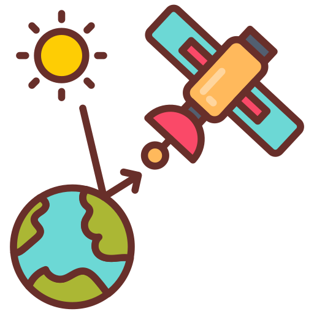
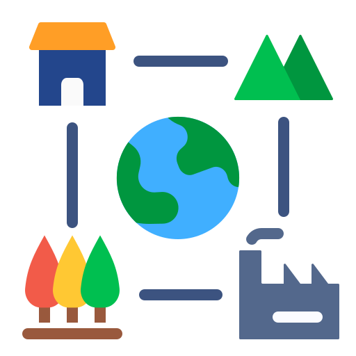

Core Research Areas
Cutting-edge research in smart sensing and climate technologies
 Climate Change & Environmental Monitoring
Climate Change & Environmental Monitoring
Deploying advanced sensor networks to collect high-resolution environmental data, enabling accurate climate modeling and informing evidence-based policy decisions.
Agriculture & Crop Monitoring
Utilizing satellite imagery and field sensors to enable precision agriculture, optimizing water, fertilizer, and pesticide use for increased crop yield and sustainability.
Forestry & Biodiversity Conservation
Implementing advanced monitoring systems to protect endangered species, manage forest resources, and understand the impacts of climate change on ecosystems.
 Water Resources & Hydrology
Water Resources & Hydrology
Developing integrated sensor networks for comprehensive water resource management, water quality monitoring , Flood mapping, and sustainable groundwater management.
 Urban Heat & Smart Cities
Urban Heat & Smart Cities
Deploying dense sensor networks to map urban heat islands, identify high-risk areas, and evaluate the cooling effects of green infrastructure for resilient city planning.

GIS, Remote Sensing & Spatial Data ScienceEnergy-efficient and environmentally friendly sensor technologies for long-term deployment.
Air Quality Monitoring & Pollution Control
Air quality monitoring and pollution control using advanced sensor networks and data analytics.
 Natural Disaster Management & Resilience
Natural Disaster Management & Resilience
Natural disaster management and resilience through advanced sensing technologies and data-driven approaches.

Landscape Dynamics & Change DetectionTracking landscape transformation to decipher environmental and societal impacts.
GeoAI & Spatial Machine Learning
Leveraging spatial AI and machine learning to extract critical insights from geospatial data.